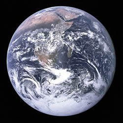

太阳系是以太阳为中心，和所有受到太阳的重力约束天体的集合体：8颗行星、至少165颗已知的卫星、5颗已经辨认出来的矮行星和数以亿计的太阳系小天体。这些小天体包括小行星、柯伊伯带的天体、彗星和星际尘埃。 依照至太阳的距离，太阳系内的行星依序是水星、金星、地球、火星、木星、土星、天王星和海王星。8颗行星中的6颗有天然的卫星环绕，在太阳系外侧的行星还被由尘埃和许多小颗粒构成的行星环环绕着。
水星
 水星在八大行星中是最小的行星，比月球大1/3，它同时也是最靠近太阳的行星。水星目视星等范围从0.4到5.5；水星太接近太阳，常常被猛烈的阳光淹没，所以望远镜很少能够仔细观察它，水星没有自然卫星，唯一靠近过水星的卫星是美国探测器水手10号，
在1974年-1975年探索水星时，只拍摄到大约45%的表面。水星是太阳系中运动最快的行星。水星的英文名字Mercury来自罗马神墨丘利（赫耳墨斯）。他是罗马神话中的信使。因为水星约88天绕太阳一圈，是太阳系中公转最快的行星。符号是上面一个圆形下面一
个交叉的短垂线和一个半圆形（Unicode），是墨丘利所拿魔杖的形状，在前5世纪，水星实际上被认为成第二个不同的行星，这是因为它时常交替地出现在太阳的两侧，当它出现在傍晚时，他被叫做墨丘利，但是当它出现在早晨时，为了纪念太阳神阿波罗，它被
称为阿波罗，毕达哥拉斯后来指出他们实际上是相同的一颗行星。
水星在八大行星中是最小的行星，比月球大1/3，它同时也是最靠近太阳的行星。水星目视星等范围从0.4到5.5；水星太接近太阳，常常被猛烈的阳光淹没，所以望远镜很少能够仔细观察它，水星没有自然卫星，唯一靠近过水星的卫星是美国探测器水手10号，
在1974年-1975年探索水星时，只拍摄到大约45%的表面。水星是太阳系中运动最快的行星。水星的英文名字Mercury来自罗马神墨丘利（赫耳墨斯）。他是罗马神话中的信使。因为水星约88天绕太阳一圈，是太阳系中公转最快的行星。符号是上面一个圆形下面一
个交叉的短垂线和一个半圆形（Unicode），是墨丘利所拿魔杖的形状，在前5世纪，水星实际上被认为成第二个不同的行星，这是因为它时常交替地出现在太阳的两侧，当它出现在傍晚时，他被叫做墨丘利，但是当它出现在早晨时，为了纪念太阳神阿波罗，它被
称为阿波罗，毕达哥拉斯后来指出他们实际上是相同的一颗行星。
金星
 八大行星之一，中国古代称之为太白或太白金星。它有时是晨星，黎明前出现在东方天空，被称为“启明”；有时是昏星，黄昏后出现在西方天空，被称为“长庚”。名称来源金星是全天中除太阳和月亮外最 亮的星，犹如一颗耀眼的钻石，于是古希腊人称它为
阿佛洛狄忒--爱与美的女神，而罗马人则称它为维纳斯--美神。
八大行星之一，中国古代称之为太白或太白金星。它有时是晨星，黎明前出现在东方天空，被称为“启明”；有时是昏星，黄昏后出现在西方天空，被称为“长庚”。名称来源金星是全天中除太阳和月亮外最 亮的星，犹如一颗耀眼的钻石，于是古希腊人称它为
阿佛洛狄忒--爱与美的女神，而罗马人则称它为维纳斯--美神。
地球
 地球是唯一一个不是从希腊或罗马神话中得到的名字。Earth一词来自于古英语及日耳曼语。这里当然有许多其他语言的命名。在罗马神话中，地球女神叫Tellus－肥沃的土地（希腊语：Gaia, 大地母亲） 直到16世纪哥白尼时代人们才明白地球只是一颗行星。 地球，当然不需要飞行器即可被观测，然而我们直到二十世纪才有了整个行星的地图。由空间拍到的图片应具有合理的重要性；举例来说，它们大大帮助了气象预报及暴风雨跟踪预报。它们真是与众不同的漂亮啊！ 地球由于不同的化学成分与地震性质被分为不同的岩层（深度－千米）： 0- 40 地壳 40- 400 Upper mantle - 上地幔 400- 650 Transition region - 过渡区域 650-2700 Lower mantle - 下地幔 2700-2890 D'' layer - D"层2890-5150 Outer core - 外核 5150-6378 Inner core - 内核 地壳的厚度不同，海洋处较薄，大洲下较厚。内核与地壳为实体；外核与地幔层为流体。不同的层由不连续断面分割开，这由地震数据得到；其中最有名的有数地壳与上地幔间的莫霍面－不连续断面了。火星
 火星(希腊语: 阿瑞斯)被称为战神。这或许是由于它鲜红的颜色而得来的；火星有时被称为“红色行生”。（趣记：在希腊人之前，古罗马人曾把火星作为农耕之神来供奉。而好侵略扩张的希腊人却把火星作为战争的象征）而“三月”的名字也是得自于火星。
火星的轨道是显著的椭圆形。因此，在接受太阳照射的地方，近日点和远日点之间的温差将近30摄氏度。这对火星的气候产生巨大的影响。火星上的平均温度大约为218K（-55℃，-67华氏度），但却具有从冬天的140K（-133℃，-207华氏度）到夏日白天的将近300K（27℃，80华氏度）
的跨度。尽管火星比地球小得多，但它的表面积却相当于地球表面的陆地面积。
早在公元前3000年的苏美尔时代，人们便发现了水星，古希腊人赋于它两个名字：当它初现于清晨时称为阿波罗，当它闪烁于夜空时称为赫耳墨斯。不过，古希腊天文学家们知道这两个名字实际上指的是同一颗星星，赫拉克赖脱（公元前5世纪之希腊哲学家）甚至认为水星与金星并非
环绕地球，而是环绕着太阳在运行。
火星(希腊语: 阿瑞斯)被称为战神。这或许是由于它鲜红的颜色而得来的；火星有时被称为“红色行生”。（趣记：在希腊人之前，古罗马人曾把火星作为农耕之神来供奉。而好侵略扩张的希腊人却把火星作为战争的象征）而“三月”的名字也是得自于火星。
火星的轨道是显著的椭圆形。因此，在接受太阳照射的地方，近日点和远日点之间的温差将近30摄氏度。这对火星的气候产生巨大的影响。火星上的平均温度大约为218K（-55℃，-67华氏度），但却具有从冬天的140K（-133℃，-207华氏度）到夏日白天的将近300K（27℃，80华氏度）
的跨度。尽管火星比地球小得多，但它的表面积却相当于地球表面的陆地面积。
早在公元前3000年的苏美尔时代，人们便发现了水星，古希腊人赋于它两个名字：当它初现于清晨时称为阿波罗，当它闪烁于夜空时称为赫耳墨斯。不过，古希腊天文学家们知道这两个名字实际上指的是同一颗星星，赫拉克赖脱（公元前5世纪之希腊哲学家）甚至认为水星与金星并非
环绕地球，而是环绕着太阳在运行。
木星
 木星是天空中第四亮的物体（次于太阳，月球和金星；有时候火星更亮一些），早在史前木星就已被人类所知晓。根据伽利略1610年对木星四颗卫星：木卫一，木卫二，木卫三和木卫四（现常被称作伽利略卫星）的观察，它们是不以地球为中心运转的第一个发现，也是赞同哥白尼的日
心说的有关行星运动的主要依据；由于伽利略直言不讳地支持哥白尼的理论而被宗教裁判所逮捕，并被强迫放弃自己的信仰，关在监狱中度过了余生。
木星由90%的氢和10%的氦（原子数之比，75/25%的质量比）及微量的甲烷、水、氨水和“石头”组成。这与形成整个太阳系的原始的太阳系星云的组成十分相似。土星有一个类似的组成，但天王星与海王星的组成中，氢和氦的量就少一些了。
木星是天空中第四亮的物体（次于太阳，月球和金星；有时候火星更亮一些），早在史前木星就已被人类所知晓。根据伽利略1610年对木星四颗卫星：木卫一，木卫二，木卫三和木卫四（现常被称作伽利略卫星）的观察，它们是不以地球为中心运转的第一个发现，也是赞同哥白尼的日
心说的有关行星运动的主要依据；由于伽利略直言不讳地支持哥白尼的理论而被宗教裁判所逮捕，并被强迫放弃自己的信仰，关在监狱中度过了余生。
木星由90%的氢和10%的氦（原子数之比，75/25%的质量比）及微量的甲烷、水、氨水和“石头”组成。这与形成整个太阳系的原始的太阳系星云的组成十分相似。土星有一个类似的组成，但天王星与海王星的组成中，氢和氦的量就少一些了。
土星
 在罗马神话中，土星（Saturn）是农神的名称。希腊神话中的农神Cronus是Uranus（天王星）和盖亚的儿子，也是宙斯（木星）的父亲。土星也是英语中“星期六”（Saturday）的词根。
土星在史前就被发现了。伽利略在1610年第一次通过望远镜观察到它，并记录下它的奇怪运行轨迹，但也被它给搞糊涂了。早期对于土星的观察十分复杂，这是由于当土星在它的轨道上时每过几年，地球就要穿过土星光环所在的平面。（低分辨率的土星图片所以经常有彻底性的变化。）
直到1659年惠更斯正确地推断出光环的几何形状。在1977年以前，土星的光环一直被认为是太阳系中唯一存在的；但在1977年，在天王星周围发现了暗淡的光环，在这以后不久木星和海王星周围也发现了光环。
在罗马神话中，土星（Saturn）是农神的名称。希腊神话中的农神Cronus是Uranus（天王星）和盖亚的儿子，也是宙斯（木星）的父亲。土星也是英语中“星期六”（Saturday）的词根。
土星在史前就被发现了。伽利略在1610年第一次通过望远镜观察到它，并记录下它的奇怪运行轨迹，但也被它给搞糊涂了。早期对于土星的观察十分复杂，这是由于当土星在它的轨道上时每过几年，地球就要穿过土星光环所在的平面。（低分辨率的土星图片所以经常有彻底性的变化。）
直到1659年惠更斯正确地推断出光环的几何形状。在1977年以前，土星的光环一直被认为是太阳系中唯一存在的；但在1977年，在天王星周围发现了暗淡的光环，在这以后不久木星和海王星周围也发现了光环。